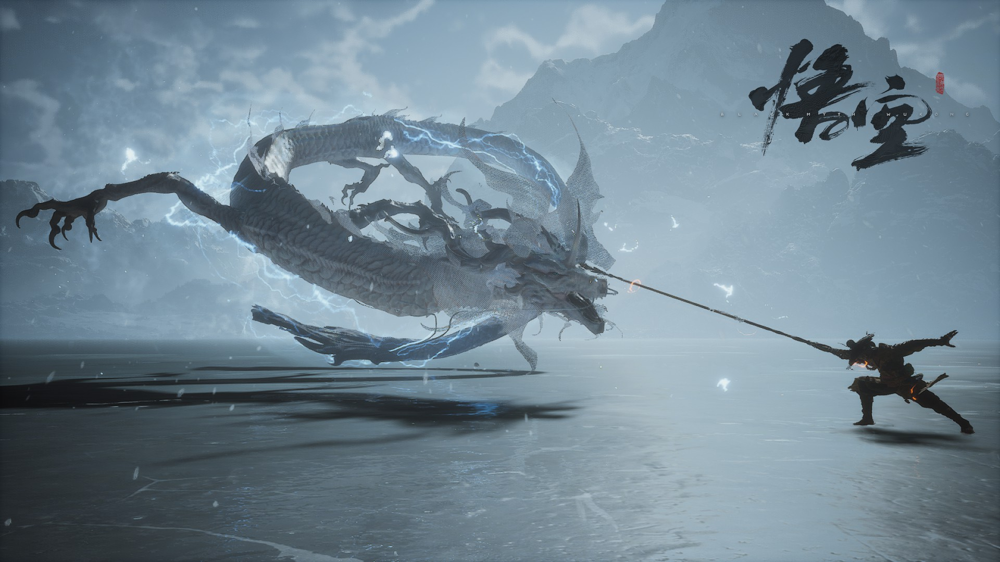

黑神话：悟空
黑悟空
黑神话中的孙悟空，曾是齐天大圣，因反抗天庭被如来镇压五百年。取经后却发现真相残酷，重拾反叛之心，成为亦正亦邪的"黑悟空"。拥有超凡武艺和桀骜不驯的性格。
500
年镇压
齐天
大圣
斗战
胜佛
如意金箍棒
定海神针铁，重一万三千五百斤，可随心意变化大小。黑悟空的主要武器，能大能小，能长能短，挥舞时蓝光四射，威力无穷。曾是太上老君炼制，大禹治水的定子。
13,500
斤重
∞
变化
定海
神威
紧箍咒
观音赐予唐僧的法宝，用以约束孙悟空。在黑神话中，紧箍咒象征着天庭对悟空的束缚与控制。当咒语念动时，金箍紧缩，使悟空痛不欲生，但也激发了他更深的愤怒与力量。
禁锢
之力
痛苦
之源
反抗
之因
锁子黄金甲
黑悟空的战甲，由龙宫珍宝打造，金光闪烁却带有暗黑纹路。甲胄轻如鸿毛却坚不可摧，能抵御神兵利器的攻击。甲上刻有古老符文，随着战斗会逐渐显现出血色光芒。
龙宫
珍宝
符文
战甲
不坏
之身
七十二变
悟空的招牌神通，可变化万千形态。在黑神话中，这项能力更加黑暗强大，不仅能变化外形，还能模仿他人法术和气息。但过度使用会使悟空逐渐迷失自我，陷入疯狂。
72
般变化
千面
神通
疯狂
边缘
<
>
